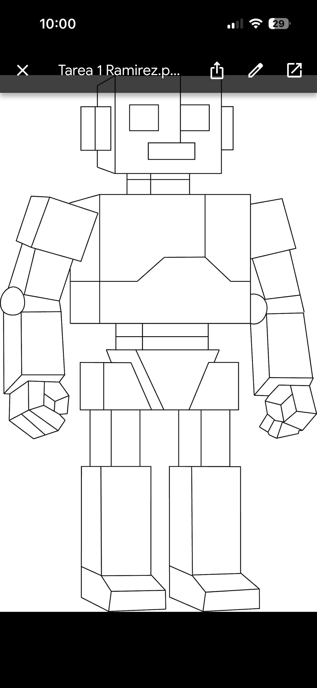
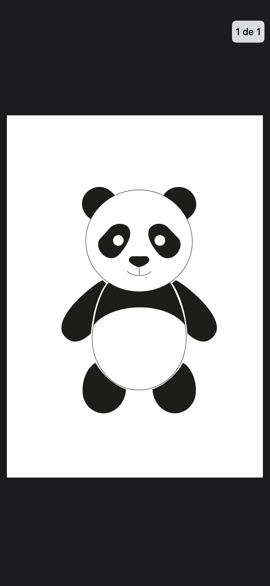
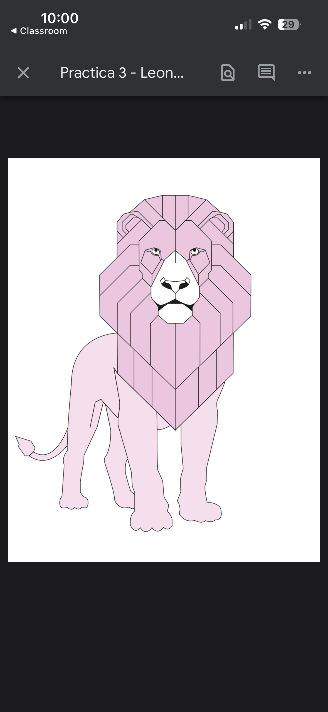
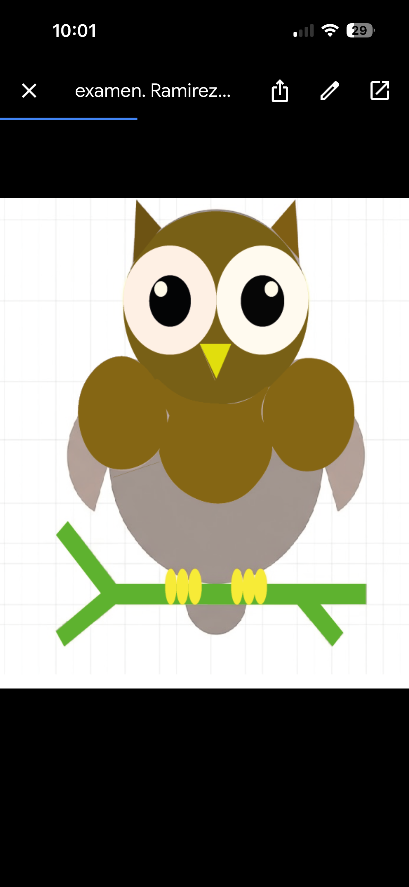

Práctica 1: Robot
Durante esta actividad aprendí a preparar un documento de diseño digital, eligiendo las configuraciones adecuadas de tamaño y color. También conocí herramientas esenciales para crear y editar formas, así como el uso de capas para mantener el trabajo organizado. Finalmente, comprendí algunos consejos útiles que facilitan y mejoran el proceso de diseño.

Práctica 2: Oso
Durante esta actividad aprendí a preparar un documento de diseño digital y a utilizar diferentes herramientas para construir formas. Organicé mi trabajo mediante capas y apliqué estos conocimientos en la realización de un diseño de un oso. También entendí la importancia de la organización, el detalle y el uso de técnicas que mejoran el proceso de diseño.

Práctica 3: León
Durante esta actividad aprendí a trabajar en Adobe Illustrator y a utilizar sus herramientas principales para construir una ilustración digital. Organicé el proceso mediante capas y elaboré el dibujo de un león prestando atención a los detalles y proporciones. Además, apliqué colores de forma creativa para darle un mejor acabado al diseño.

Examen 2
Durante esta actividad presenté un examen en Adobe Illustrator donde utilicé las herramientas básicas aprendidas. Organicé el proceso con capas y empleé instrumentos como la pluma y la selección directa para realizar la ilustración. En esta evaluación dibujé un búho, cuidando los detalles y aplicando color para obtener un mejor resultado visual.